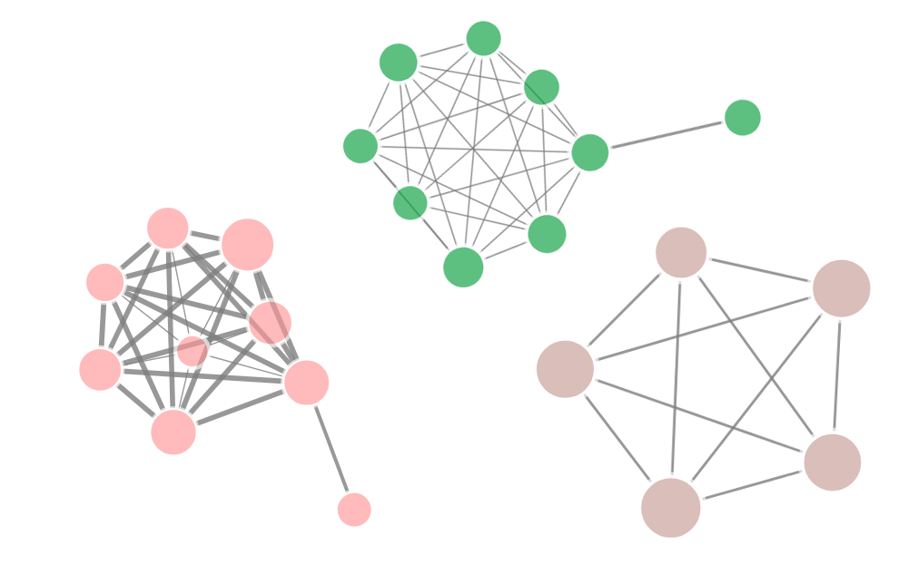
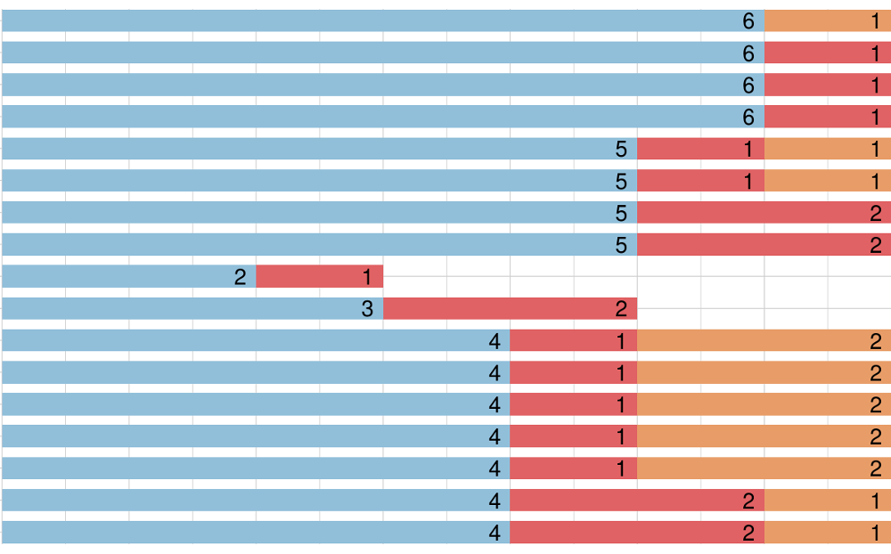

Voz Ativa
Leg.go
Aderência de deputados à orientação do partido

Encontrando grupos de deputados por co-autorias

Alinhamento dos parlamentares com posições de Meio Ambiente
Encontrando grupos de deputados por co-autorias no Meio Ambiente